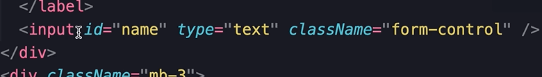
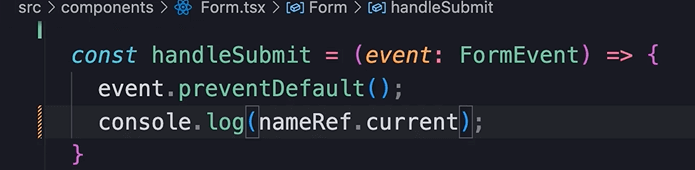
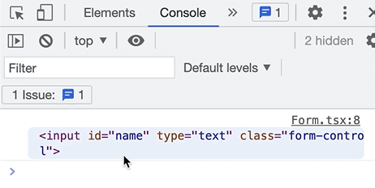
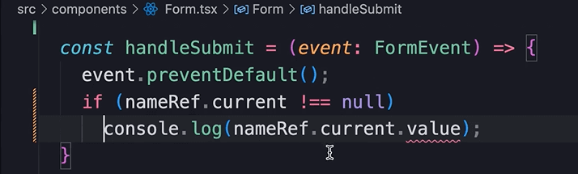
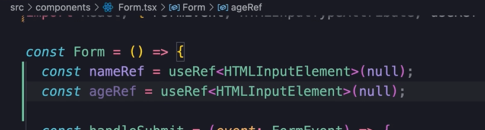
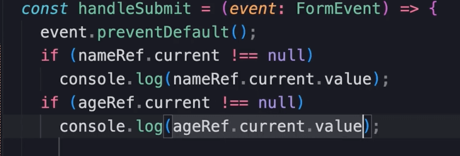
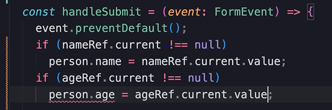

HOME
Accessing Input Fields
useRef
So, we have learned how to use the state hook in react.
In react, we have another built in hook called, 'useRef'.
'useRef' can be used to reference a DOM element.
In this lesson we learn how to use this hook to reference an input
field, and read its value when the form is submitted.
import useRef
First, import useRef, and call it with the param as null...
It has to be initialized to something. If you dont need a value here,
use null.
It returns a reference object, so store that like this...
Associate the obj with the intput field
Now, we need to associate the reference object with this input
field...

So, set its ref attribute to nameRef...
Change console.log
Now, instead of logging submitted to the console log nameRef.current.
Current is the only property a reference object has.

This is what will get logged...

You can see that we are referencing an html intupt element.
And we know that all html input elements have a value property.
So add .value to the console log...
nameRef.current.value
You can see we get a compilation err saying that nameRef.current is
possibly null...
So simply do a null check...

Now we have ANOTHER compilation err on the value property...

The reason for this err is that Typescript doesn't know we are
referencing an html input element.
Because with useRef we can reference any kind of element.
To tell Typescript we need to put this here...
Now if you type a name and submit the form, you will see the text
logged to the console.
The age field
Now, we need to repeat the same steps for the age field.
So, call useRef, specify HTMLInputElement, init to null, and store it
in a const obj...

Associate the ref obj with the age input field...
Finally, perform a null check, and log the age to the console...

Great! Now typically, when submitting a form, you need to send an
object to the server to be saved.
Saving to an object
So, instead of saving the name and age a separate values, make an
object called person with two propertys for name and age.
Next, remove both console.logs and replace them by setting the person
propertys to the current value of their input fields...

But, we have err with person.age...
This err is because the age property is a number, but the value
property returns a string.
To fix this call parseInt and pass the age input value...
Finally, log the person obj...
Why do we have to init every ref obj with null?
Well, the 'current' property of a ref obj references a DOM node.
The initial value we pass to the useRef hook will be used to set the
'current' property.
Here's the thing... Initially when we create a ref obj, we don't have
access to a DOM node, because the DOM is created AFTER React renders
our component.
So we really have no value to provide here.
How react handles the 'current' property
When react renders our component and creates the DOM, it will set the
'current' property to a DOM node, and it will set it back to null when
the node is removed from the screen.
So the 'current' property should either be null, or it should
reference an existing DOM node.
What if we don't initialize useRef?
If we do not supply an initial value, the 'current' property will be
'undefined'.
This can cause unexpected isuues down the road.
To me this seems like a design flaw to react. If no value is supplied,
react should initialize current to null, but it is what is it and we
have to deal with it.